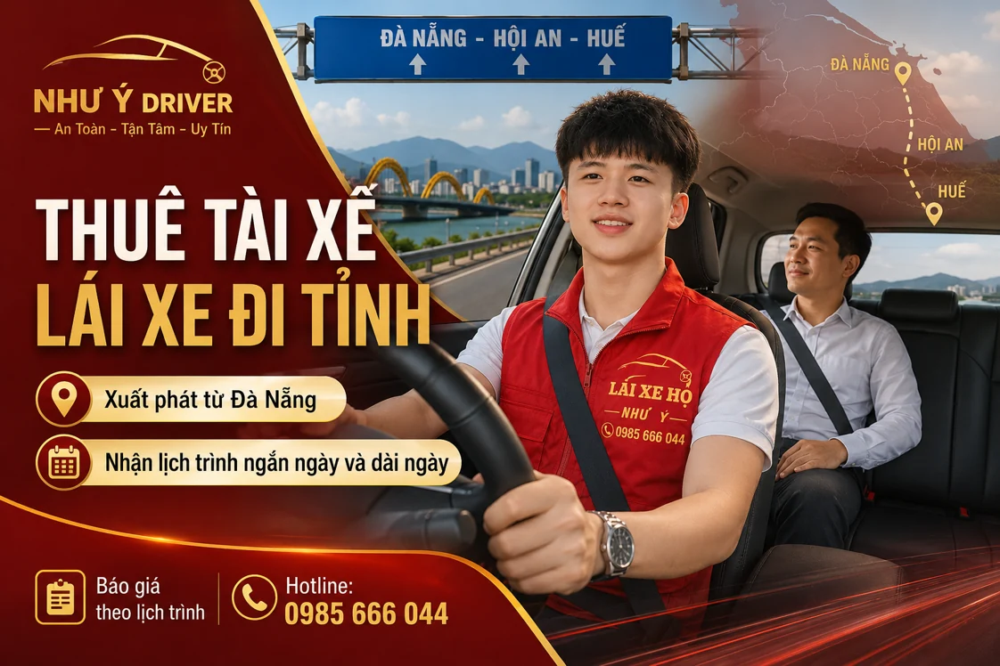

NHƯ Ý DRIVER · ĐỒNG HÀNH CÙNG BẠN
Thuê tài xế đi tỉnh từ Đà Nẵng
Bạn có xe riêng và cần người lái thay cho hành trình xa từ Đà Nẵng? Gửi địa chỉ đến, ngày giờ, phương án một chiều hoặc khứ hồi và thời gian chờ để Như Ý Driver kiểm tra khả năng nhận lịch, sau đó xác nhận chi phí toàn chuyến.

Đi tỉnh bằng xe riêng, thuê người lái thay
Khi đi công việc, thăm người thân hoặc có một hành trình dài, bạn có thể muốn nghỉ ngơi trên xe thay vì tự điều khiển suốt quãng đường. Thuê người lái thay là phương án để cân nhắc nếu đã có phương tiện và kế hoạch di chuyển.
Như Ý Driver kiểm tra yêu cầu theo tuyến, ngày đi, loại xe và thời lượng phục vụ. Gửi đầy đủ thông tin từ đầu sẽ giúp hai bên trao đổi chi phí và chuẩn bị lịch người lái phù hợp hơn.
Những thông tin quyết định cách sắp xếp chuyến
- Điểm xuất phát và điểm đến: gửi địa chỉ cụ thể, không chỉ tên tỉnh hoặc thành phố.
- Ngày, giờ đi: kèm giờ cần có mặt ở điểm đến nếu có cuộc hẹn.
- Một chiều hay khứ hồi: nêu lượt về trong ngày hay ngày khác.
- Thời gian chờ: tài xế có ở lại điểm đến trong lúc bạn làm việc không?
- Loại xe: dòng xe, hộp số, số người đi cùng và những lưu ý riêng.
Thuận tiện khi giữ lịch trình với xe của mình
Bạn có thể mang theo đồ dùng và sử dụng chiếc xe quen thuộc trong chuyến đi. Khi có người lái thay, bạn có thời gian nghỉ hoặc dành sự chú ý cho người thân đi cùng trong phạm vi phù hợp với hành trình.
Với lịch có nhiều điểm ghé, việc trao đổi trước giúp bạn nhận một phương án tổng thể cho cả chuyến. Nếu đang phân vân giữa theo chuyến và thời lượng, xem cách chọn thuê tài xế theo giờ hay theo ngày.
Giá tài xế đi tỉnh được báo theo hành trình
Chuyến dài cần xem cả quãng đường, lượt về, thời gian chờ và tổng thời lượng. Bạn nên hỏi giá cho lịch trình đầy đủ, làm rõ phí cầu đường, đỗ xe, ăn nghỉ nếu có và cách xử lý khi phát sinh chặng mới.
Với quãng đường trên 30 km, vui lòng liên hệ để nhận báo giá theo yêu cầu. Bảng giá tham khảo giúp bạn xem cách phân loại dịch vụ, nhưng không thay cho báo giá riêng của một lịch đi tỉnh.
Hỏi tuyến cụ thể thay vì mặc định có lịch
Nếu dự định đi Hội An, Huế hoặc một hành trình xa khác, hãy gửi đúng địa chỉ và thời gian để kiểm tra. Mỗi yêu cầu cần xem vị trí xuất phát, khả năng bố trí và kế hoạch quay về; không nên chỉ dựa vào tên tuyến để chốt chuyến.
Nếu chưa chắc giờ về, nói rõ khoảng thời gian dự kiến và mức độ linh hoạt. Khi lịch thay đổi, báo lại sớm để trao đổi thời lượng và chi phí mới.
Chuẩn bị xe và bàn giao trước ngày đi
Kiểm tra tình trạng phương tiện, nhiên liệu và các lưu ý vận hành trước khi xuất phát. Giới thiệu thao tác riêng của xe với tài xế; cùng thống nhất thời gian nghỉ và các điểm dừng cần thiết trong chuyến.
Bạn có thể xem những việc cần chuẩn bị khi giao xe. Để hỏi lịch người lái, gọi 0985 666 044 hoặc gửi Zalo kèm hành trình.
Đặt tài xế Như Ý Driver như thế nào?
- Liên hệ: gọi 0985 666 044, nhắn Zalo hoặc gửi biểu mẫu đặt tài xế.
- Gửi lịch trình: điểm đón, điểm đến, loại xe, giờ đi và các yêu cầu chờ hoặc ghé thêm điểm.
- Xác nhận chuyến: trao đổi tổng phí, thời gian đón dự kiến và thông tin người nhận xe.
- Bàn giao và kết thúc: kiểm tra xe, thực hiện hành trình, nhận lại chìa khóa và thanh toán theo nội dung đã thống nhất.
Một chiều và khứ hồi cần hai kế hoạch khác nhau
| Phương án | Thông tin cần làm rõ |
|---|---|
| Kết thúc ở điểm đến | Ai nhận xe, chìa khóa và hoàn tất việc bàn giao? |
| Quay về trong ngày | Giờ đón về, nơi nhận lượt về và thời gian chờ giữa hai lượt. |
| Lịch qua đêm | Ngày về, thời lượng phục vụ và điều kiện ăn nghỉ nếu có. |
| Chưa chắc giờ về | Khoảng giờ dự kiến, phần lịch có thể đổi và cách báo lại. |
Nếu bạn đang chuẩn bị chuyến tới Hội An hoặc Huế, xem bài hướng dẫn riêng để gửi đủ thông tin. Khả năng phục vụ từng hành trình cần được xác nhận, không suy từ tên tuyến.
Câu hỏi thường gặp
Đi một chiều và khứ hồi có cùng cách báo giá không?
Hai lịch trình cần thông tin khác nhau về lượt về và thời gian chờ. Hãy nêu đúng nhu cầu để nhận báo giá cho toàn chuyến.
Có thể thêm điểm dừng trong lúc đi không?
Trao đổi với điều phối và tài xế trước khi thay đổi, vì chặng mới có thể ảnh hưởng lịch và chi phí.
Đặt sớm có cần cung cấp đầy đủ loại xe không?
Có. Dòng xe, hộp số và ngày giờ đi giúp kiểm tra khả năng bố trí phù hợp.
Thông tin liên quan
HÃY CHỦ ĐỘNG CHO CHUYẾN ĐI
Cần người lái xe thay bạn?
Gửi điểm đón, điểm đến, loại xe và giờ đi. Như Ý Driver sẽ kiểm tra lịch, thống nhất chi phí và thời gian đón trước khi xác nhận chuyến.